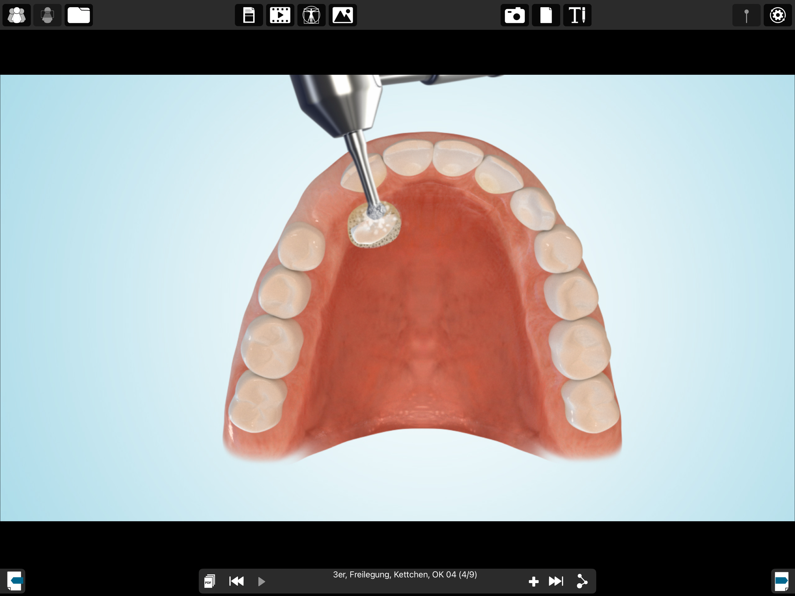
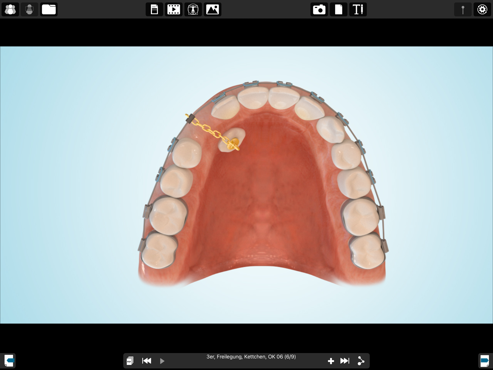
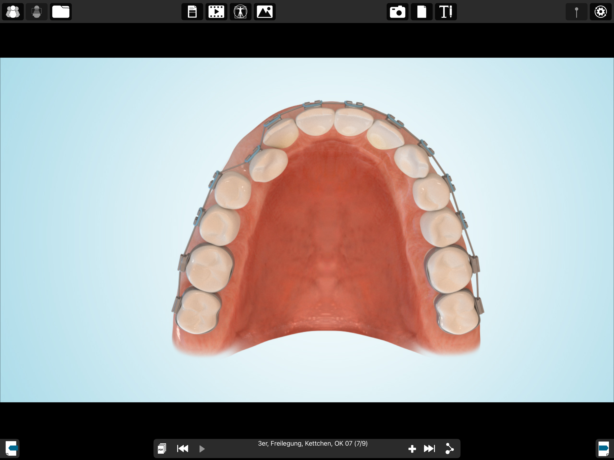
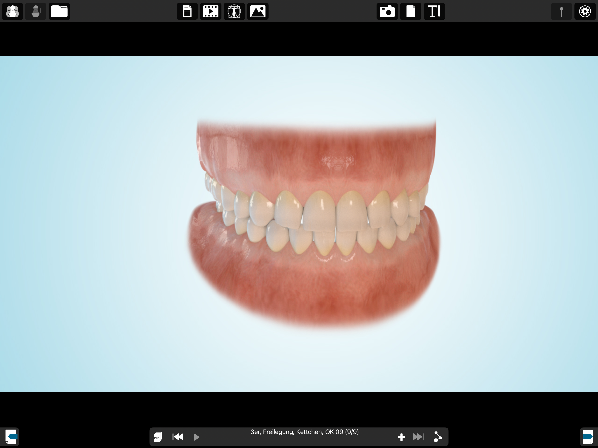

MKG im Carree · Dr. Julia Malik & Dr. Christoph Malik
Back to patient informationImage sequence for exposure and chain attachment
Schematic example of an upper canine. The surgical approach, wound closure and traction direction are planned individually. The treatment can also be used for other impacted or displaced teeth. The stages show different treatment times, not a single operation.
1 · The tooth is still beneath the gum
The position of the upper canine is assessed. Access is planned with neighbouring roots and the future gum margin in mind.

2 · Access to the crown
After opening the gum, a small amount of bone may need to be removed to make the crown accessible.
3 · The crown is accessible
The exposed tooth surface is prepared for bonding the attachment.

4 · Attachment with a chain
A small attachment is bonded to the crown. The chain connects the tooth to the orthodontic appliance.

5 · Controlled movement
Your orthodontist gradually guides the tooth towards the dental arch and adjusts the direction and force.

6 · The aim of joint treatment
The aim is to align your own tooth in the dental arch. This illustration shows a treatment goal, not a guarantee of success.
06151 786540 · info@mkg-im-carree.de
Back to patient information